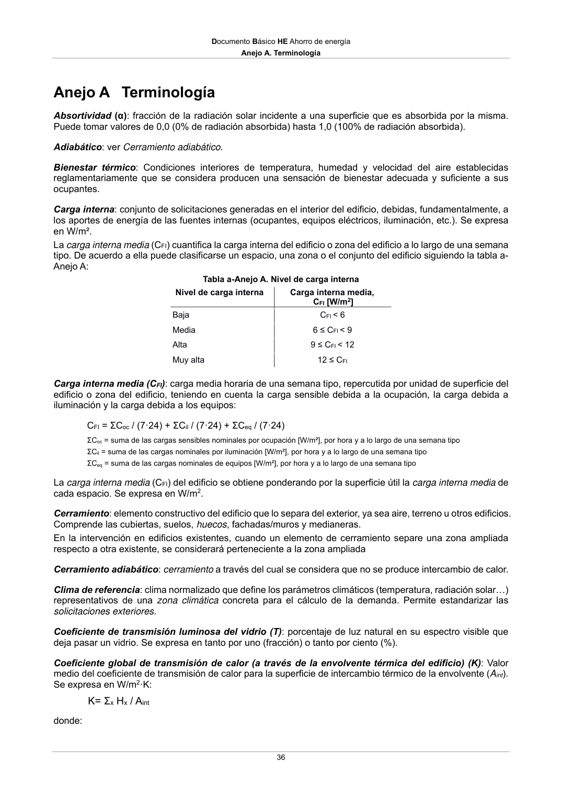

DB-HE Ahorro de energía · edición 2022-06-14 · capa oficial
Documento DB-HE-oficial · SHA-256 del PDF 7f890bd495552e979f83f72c5f5c7b642e745911a8e343a7b5b73023ce0e1f05
Copia fiel del PDF fuente · Fuente oficial
Ficha de la disposición en la fuente oficial
Formatos: JSON del segmento · Markdown
Justificación de la exigencia 1 Para justificar que un edificio cumple las exigencias de este DB, los documentos de proyecto incluirán la siguiente información sobre el edificio o parte del edificio evaluada: a) esquema de conexión utilizado para el dimensionado, según los descritos en el Reglamento electrotécnico de baja tensión; b) descripción de la conducción principal y las canalizaciones dispuestas, indicando el porcentaje de plazas de aparcamiento que cuentan con sistemas de conducción de cables y el porcentaje mínimo exigido; c) número de estaciones de recarga instaladas y número mínimo resultante de la cuantificación de la exigencia. d) tipos de estaciones de recarga y potencia de las mismas. 5 Construcción, mantenimiento y conservación 5.1 Ejecución 1 Las obras de construcción del edificio se ejecutarán con sujeción al proyecto y sus modificaciones autorizadas por el director de obra previa conformidad del promotor, a la legislación aplicable, a lo especificado en el Reglamento electrotécnico de baja tensión y en su Instrucción Técnica Complementaria ITC BT-52 "Instalaciones con fines especiales. Infraestructura para la recarga de vehículos eléctricos”, a las normas de la buena práctica constructiva y a las instrucciones del director de obra y del director de la ejecución de la obra, conforme a lo indicado en el artículo 7 de la Parte I del CTE. 5.2 Control de la ejecución de la obra 1 El control de la ejecución de la obra se realizará de acuerdo con las especificaciones del proyecto, sus anexos y modificaciones autorizados por el director de obra y las instrucciones del director de la ejecución de la obra, siguiendo lo especificado en el Reglamento electrotécnico de baja tensión, conforme a lo indicado en el artículo 7.3 de la Parte I del CTE y demás normativa vigente de aplicación. 2 Se comprobará que la ejecución de la obra se realiza de acuerdo con los controles y con la frecuencia de los mismos establecida en el pliego de condiciones del proyecto. 3 Cualquier modificación que pueda introducirse durante la ejecución de la obra quedará en la documentación de la obra ejecutada sin que en ningún caso dejen de cumplirse las condiciones mínimas señaladas en este Documento Básico. 4 En el Libro del Edificio se incluirá la documentación referente a las características de los productos, equipos y sistemas incorporados a la obra. Documento Básico HE Ahorro de energía HE 6. Dotaciones mínimas para la infraestructura de recarga de vehículos eléctricos 35 5.3 Control de la obra terminada 1 El control de la obra terminada debe seguir los criterios indicados en el artículo 7.4 de la Parte I del CTE. 2 En esta Sección del Documento Básico no se prescriben pruebas finales. 5.4 Mantenimiento y conservación del edificio 1 El plan de mantenimiento incluido en el Libro del Edificio, contemplará las operaciones y periodicidad necesarias para el mantenimiento, en el transcurso del tiempo, de los parámetros de diseño y prestaciones de la infraestructura de recarga de vehículos eléctricos. 2 Así mismo, en el Libro del Edificio se documentará todas las intervenciones, ya sean de reparación, reforma o rehabilitación realizadas a lo largo de la vida útil del edificio. Documento Básico HE Ahorro de energía
